Halo, Detektif Komputer!
Pernah nggak, kamu lagi asyik ngerjain tugas, eh tiba-tiba komputernya lemot, layar jadi biru, atau tugas yang belum disimpan hilang gara-gara mati lampu? Itu semua ada penjelasannya. Hari ini kamu yang akan menemukan sendiri jawabannya lewat percobaan di halaman ini.
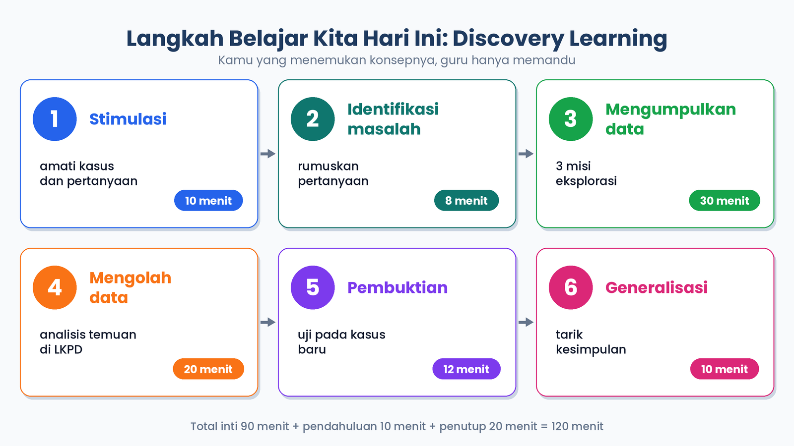
Yang akan kamu temukan
- Cara komputer mengubah data mentah menjadi informasi
- Alur input → proses → output → penyimpanan dan perangkatnya
- Kenapa komputer bisa bermasalah dan langkah awal mengatasinya
- Cara memakai perkakas komputer dengan baik dan benar
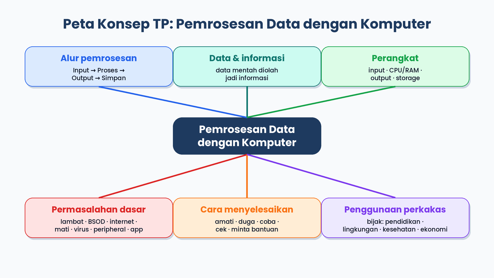
1. Data Mentah dan Informasi
Data adalah bahan mentah: angka, huruf, suara, gambar, atau video yang belum punya arti. Setelah diolah komputer, data menjadi informasi yang berguna untuk mengambil keputusan.
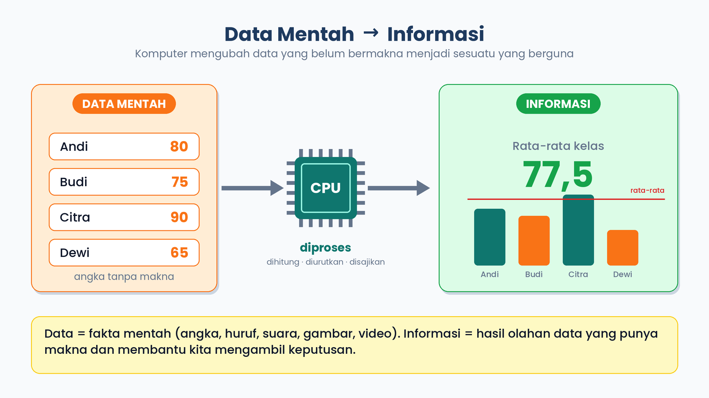
Lab 1 · Hitung Rata-rata Kilat
Masukkan empat nilai (pisahkan dengan koma). Komputer mengolah data mentahmu menjadi informasi.
Cek pemahaman: apa bedanya data dan informasi?
Data = fakta mentah yang belum bermakna (mis. 80, 75, 90, 65). Informasi = hasil olahan yang bermakna dan membantu keputusan (mis. rata-rata kelas 77,5, sehingga guru tahu siapa yang perlu pendampingan).
2. Input → Proses → Output → Penyimpanan
Membuat jus: buah di talenan = input, blender = proses, jus di gelas = output. Komputer bekerja persis seperti itu.
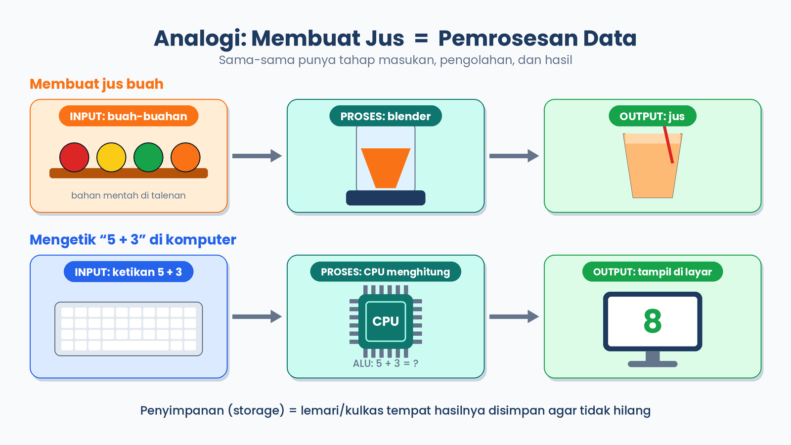
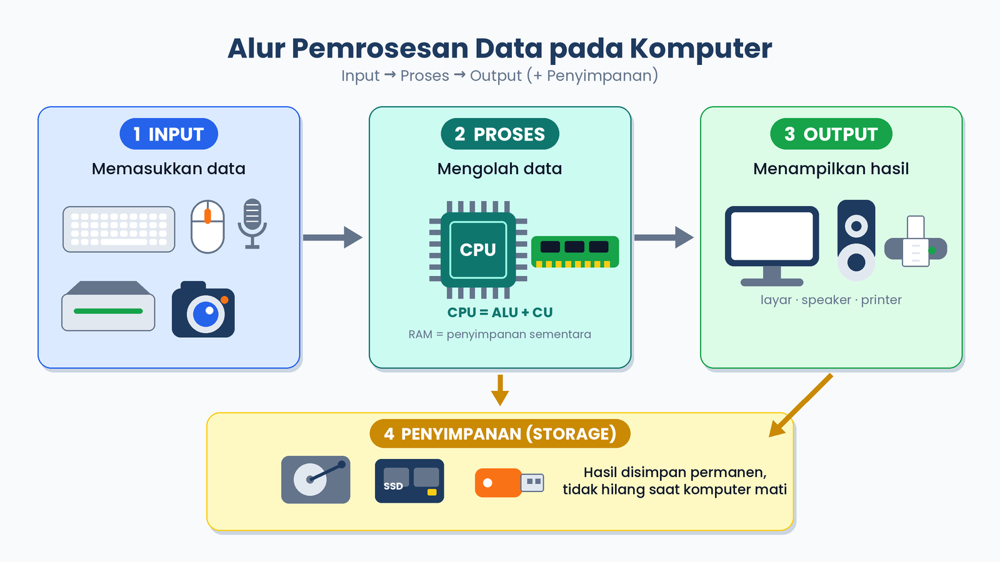
Lab 2 · Bengkel IPO
Ketik hitungan sederhana, misalnya 5 + 3, 12 * 4, 20 / 5, lalu lihat perjalanan datanya. Coba juga input yang salah, seperti 8O + 3 (huruf O).
Perangkat di tiap tahap
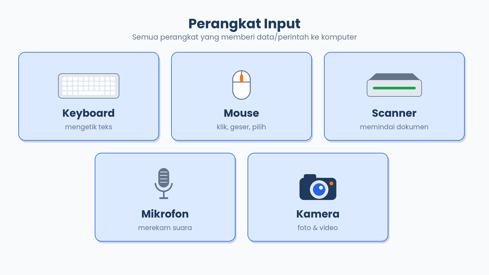
CPU (Central Processing Unit) adalah “otak komputer”. ALU menghitung dan membandingkan; CU mengatur alur data seperti polisi lalu lintas. Data yang sedang dipakai ditampung sementara di RAM.
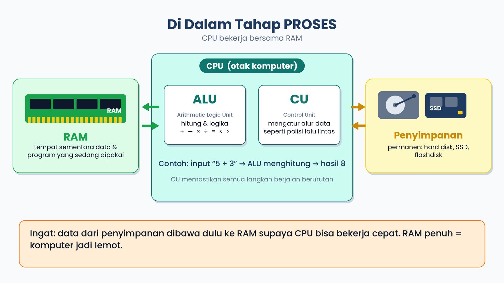
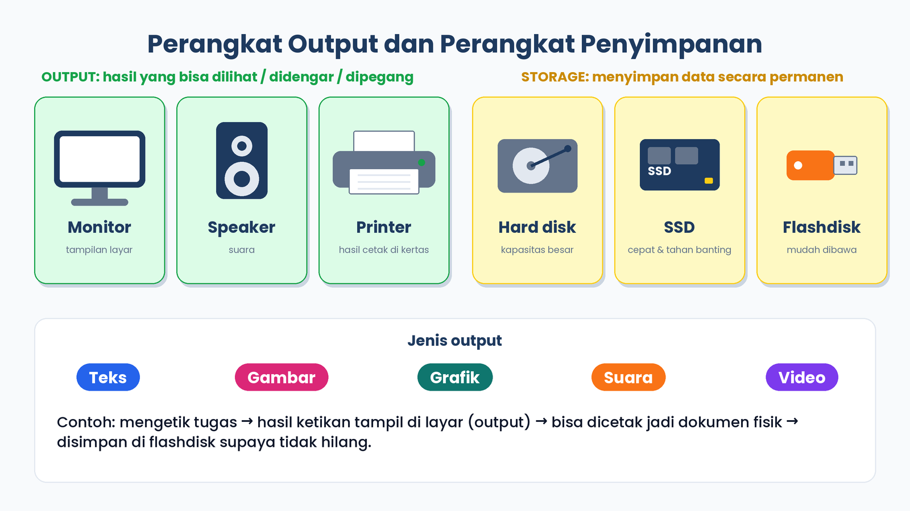
Lab 3 · Sortir Perangkat
Klik satu kartu perangkat, lalu klik kotak tahap yang tepat. Skor: 0 / 13
RAM vs Penyimpanan: kenapa harus “Save”?
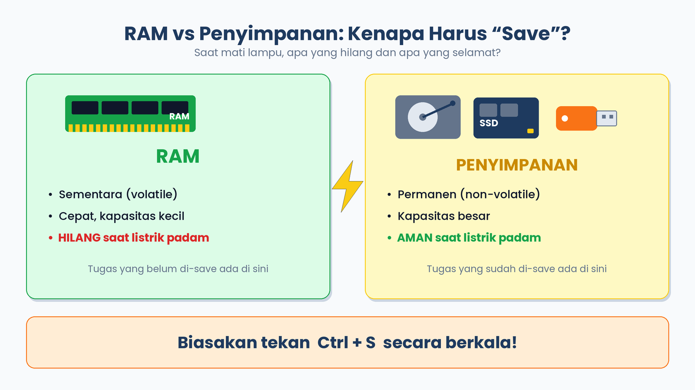
Lab 4 · Eksperimen Mati Lampu
Ketik kalimat pada kotak, tekan “Save” kapan saja, lalu tekan “Mati lampu”. Apa yang selamat?
Pemrosesan data ada di mana-mana
HP, ATM, mesin kasir, robot, dan mobil pintar memakai prinsip yang sama. Saat membuka HP dengan wajah: kamera menangkap wajah (input), HP mencocokkan dengan data tersimpan (proses), layar terbuka jika cocok (output).
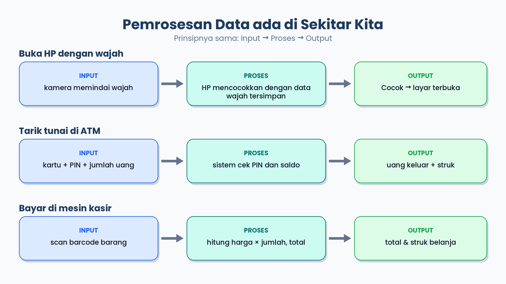
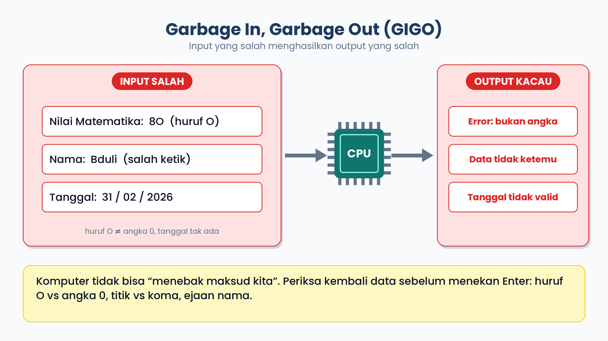
Cek pemahaman: sebutkan 4 tahap pemrosesan data dan contoh perangkatnya
Input (keyboard, mouse, mikrofon, kamera, scanner) → Proses (CPU dengan ALU dan CU, dibantu RAM) → Output (monitor, speaker, printer) → Penyimpanan (hard disk, SSD, flashdisk).
3. Masalah Dasar pada Komputer
Komputer kadang rewel, dan kamu tidak perlu panik. Cukup amati gejala, duga penyebab, coba langkah paling mudah, cek hasil, dan minta bantuan bila belum berhasil.
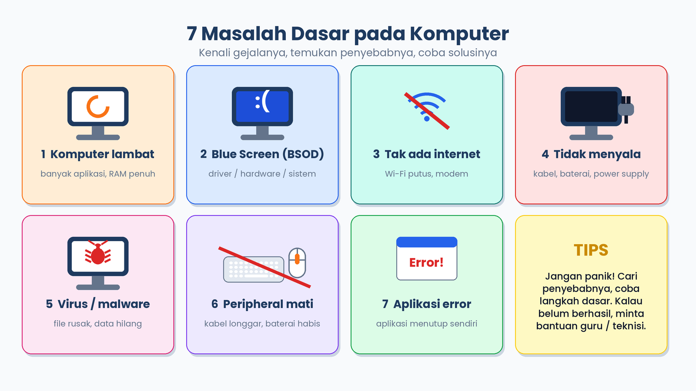
Lab 5 · Ruang Diagnosa
Pilih satu gejala untuk melihat dugaan penyebab dan langkah penanganannya.
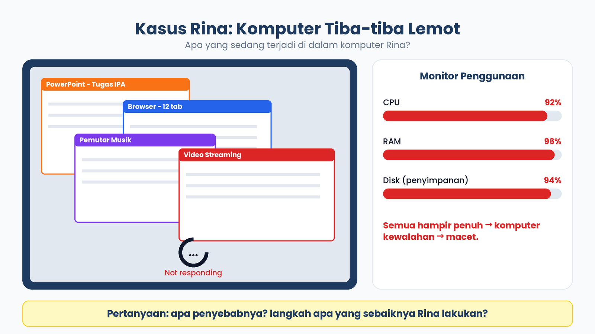
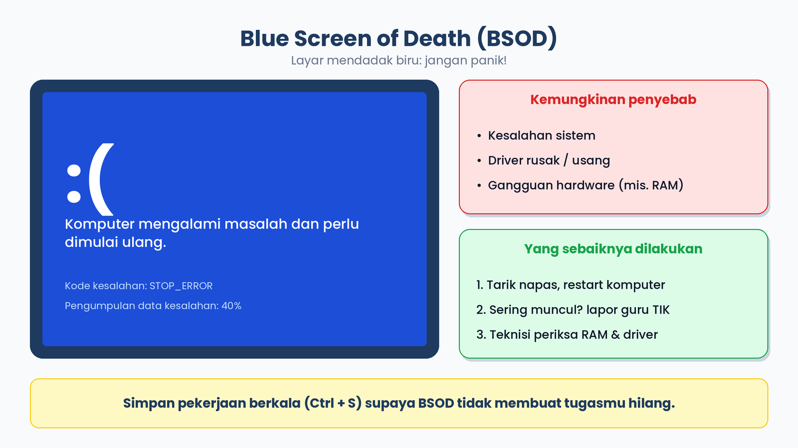
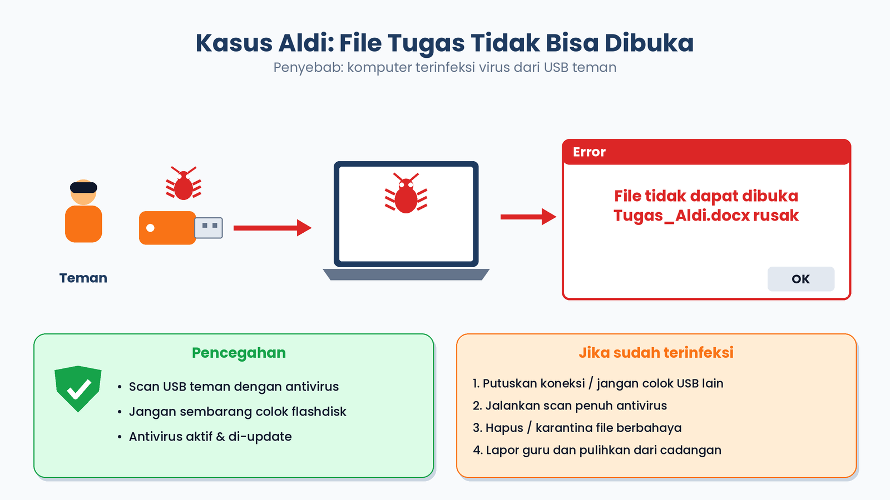
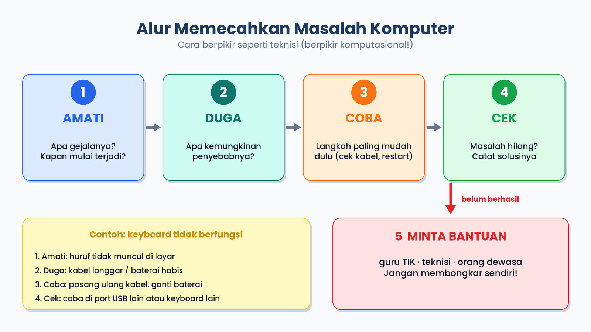
Lab 6 · Uji Detektif
Baca kasusnya, pilih penyebab yang paling mungkin. Skor: 0 / 0
Lab 7 · Jodohkan Gejala dan Solusi Pertama
Klik satu gejala di kiri, lalu pasangannya di kanan.
Penting!
Jangan membongkar komputer sekolah atau mencabut kabel sembarangan. Tugas detektif adalah menemukan penyebab dan melapor kepada guru atau teknisi.
Cek pemahaman: kasus Rina dan Aldi
Rina: lambat karena banyak aplikasi berjalan bersamaan (RAM/CPU penuh). Tutup aplikasi, bersihkan file sementara dan recycle bin, gunakan aplikasi pembersih.
Aldi: virus dari USB teman. Cegah dengan memindai USB sebelum dibuka dan memakai antivirus; bila sudah terinfeksi, lakukan pemindaian penuh, hapus atau karantina file berbahaya, minta bantuan guru.
4. Perkakas Komputer dan Penggunaannya yang Baik dan Benar
Perkakas (tools) adalah alat bantu: perangkat keras (keyboard, CPU, printer, hard disk) dan perangkat lunak (pengolah kata, spreadsheet, presentasi, browser, antivirus, rapat daring, asisten AI). Memilih yang tepat membuat kerja lebih cepat dan hasil lebih baik.
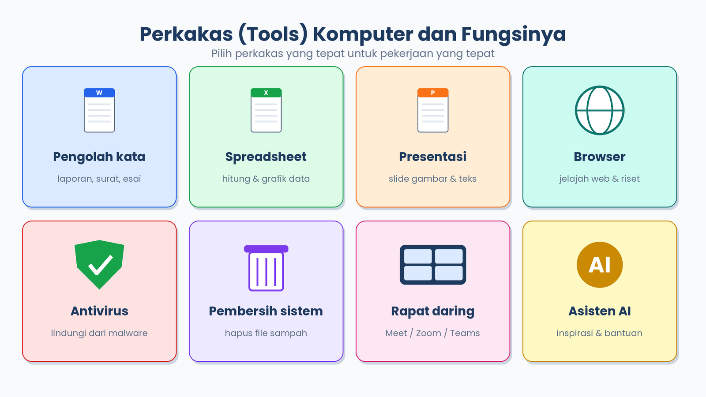
Teknologi seperti pisau dapur: bermanfaat jika dipakai benar, berbahaya jika sembarangan. Kuncinya mindfulness: menggunakan teknologi dengan sadar, bijak, dan seimbang.
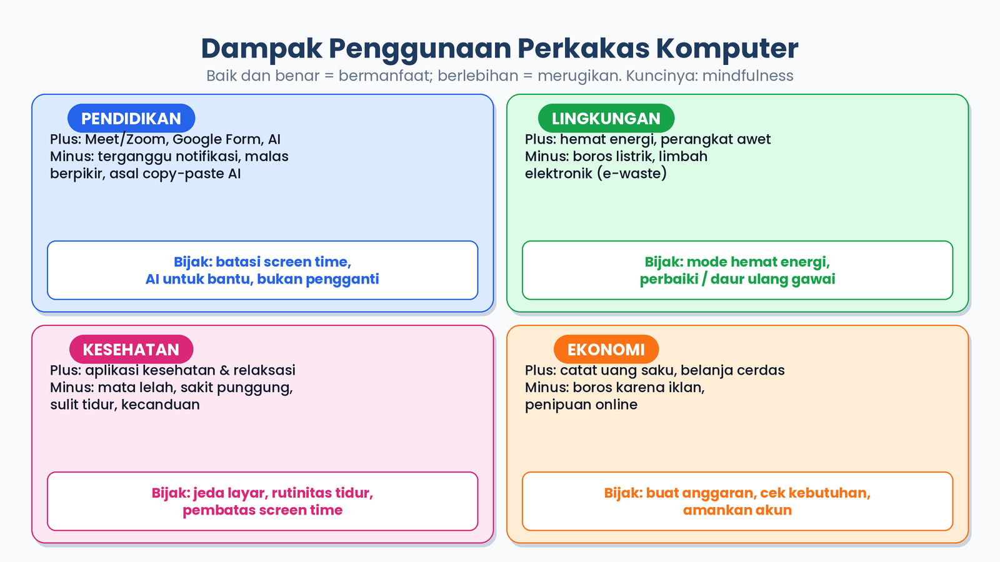
| Bidang | Dampak negatif bila tidak bijak | Sikap bijak |
|---|---|---|
| Pendidikan | Terganggu notifikasi, kecanduan gadget, malas berpikir karena asal copy-paste AI | Batasi screen time, seimbangkan aktivitas fisik dan sosial, AI sebagai pendamping |
| Lingkungan | Boros listrik, limbah elektronik (e-waste) berbahan beracun seperti timbal dan merkuri | Mode hemat energi, matikan perangkat sebelum pulang, perbaiki/daur ulang/donasikan gawai |
| Kesehatan | Mata lelah, sakit punggung, sulit tidur, kecanduan gawai | Rutinitas sebelum tidur, latihan pernapasan, pembatas screen time |
| Ekonomi | Boros karena iklan, penipuan online, akun kurang aman | Pertimbangkan kebutuhan, buat anggaran sederhana, jaga keamanan akun |
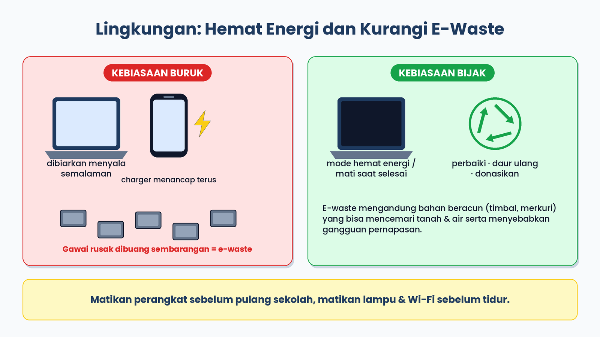
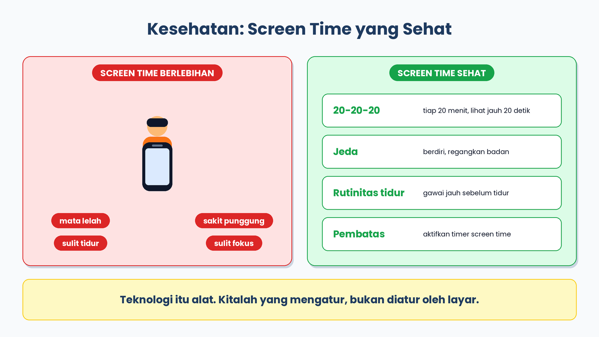
Lab 8 · Kebiasaan Bijak atau Berlebihan?
Tentukan setiap kebiasaan: bijak atau perlu diperbaiki. Skor: 0 / 0
Kuis Akhir (10 Soal)
Rangkuman dan Refleksi
Yang sudah kamu temukan
- Pemrosesan data = mengubah data mentah menjadi informasi.
- Input → Proses (CPU: ALU + CU, dibantu RAM) → Output, plus Penyimpanan untuk hasil permanen.
- RAM itu sementara, penyimpanan itu permanen: save berkala!
- Masalah dasar: lambat, BSOD, tanpa internet, tidak menyala, virus, peripheral mati, aplikasi error. Berpikir ala detektif: amati, duga, coba, cek, minta bantuan.
- Pakai perkakas dengan bijak (mindfulness) di bidang pendidikan, lingkungan, kesehatan, dan ekonomi.
Refleksi diri
Centang yang sudah kamu kuasai. Yang belum? Ulangi lab terkait.
Tantangan di rumah
Amati satu masalah teknologi di rumah atau sekolah (HP lemot, Wi-Fi putus, dll.). Tulis gejala, dugaan penyebab, langkah yang kamu coba, dan hasilnya.